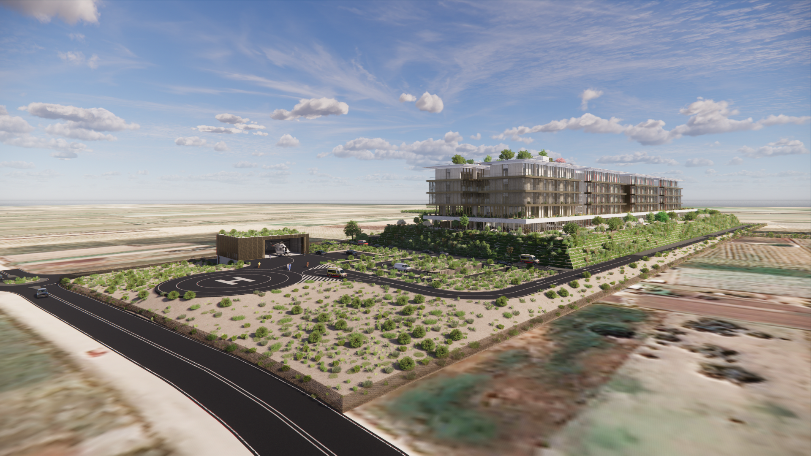

I progetti da noi studiati e progettati sul piano della fattibilità e affidabilità sono presentati al cliente secondo 4 OBBIETTIVI INTERMEDI, concorrenti all'OBBIETTIVO FINALE.

Un manufatto dalle elevate finiture e dagli standard notevoli merita l'attenzione di una clientela esigente, che apprezzi la qualità, la location e la componentistica interna. Un contenitore che soddisfa ogni esigenza di prevenzione e controllo a livello del suolo e dello spazio aereo circostante.
La qualità degli apparati sarà assicurata da dettagliata documentazione tecnica e dalla lunga esperienza. Un punto di riferimento per chi è alla ricerca di sicurezza, affidabilità, funzionalità e tenuta nel tempo.
Le caratteristiche della realizzazione ed installazione del manufatto tecnologico qualificano l'operazione come un investimento sicuro per il cliente, per dimensione e servizi.
Le soluzioni digitali avanzate si pongono come uniche nel panorama nazionale ed internazionale eliportuale ed aeroportuale. Non esistono al momento soluzioni tecniche similari, né altre realizzazioni più evolute.
Il Progetto rappresenta una tecnologia all'avanguardia caratterizzata da tempi di installazione estremamente ridotti. La sua struttura modulare consente un'integrazione fluida in diverse tipologie di infrastrutture garantendo flessibilità operativa.
La progettualità mira a salvaguardare le infrastrutture, monitorandone la piena agibilità e aumentando la consapevolezza situazionale per prevenire collisioni.
La maggior parte delle minacce per gli elicotteri HEMS derivano da fattori operativi e ambientali che possono essere rilevati anticipatamente.